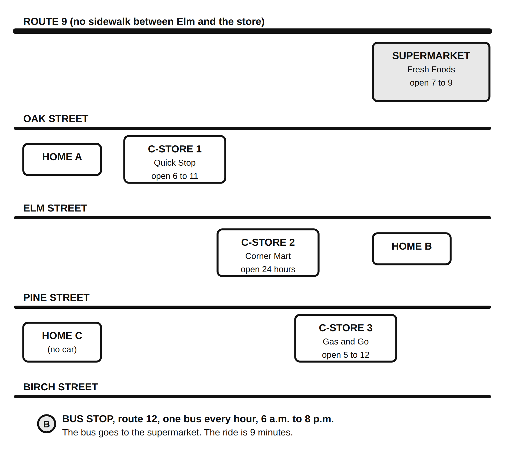

Name: ____________________________________ Date: ______________ Period: ______
Everything in this handout is made up for class. The neighborhood is not a real place. The prices are written to look like a real Long Island supermarket and a real corner store. Nobody is being described here.
Part 1. The two words
Food insecurity means _____________________________________________________
Food desert means ________________________________________________________
The four things that create a food desert
| Cause | One example |
|---|---|
| Distance | |
| Transportation | |
| Price | |
| Selection (what the store actually stocks) |
Part 2. The neighborhood
Maple Park. About 4,000 people live in the twelve blocks below. There is one full supermarket, three convenience stores, one bus line, and no sidewalk on Route 9 between Elm and the supermarket.
Scale: 1 inch on this map = 0.4 miles. One block = about 0.1 miles.

Measure it
Use a ruler and the scale. Measure straight-line distance, then add 20 percent for turns.
| From | To the supermarket | To the nearest convenience store |
|---|---|---|
| Home A | ______ miles | ______ miles, which one: __________ |
| Home B | ______ miles | ______ miles, which one: __________ |
| Home C | ______ miles | ______ miles, which one: __________ |
Highlight the walking route from Home C to the supermarket. How many blocks is it? ______
Which home has the hardest trip to the supermarket? ______
Name two reasons: ___________________________________________________________
What would make it easier? Name one change to the neighborhood, not to the family.
Part 3. Twenty dollars, two stores
You are shopping for one dinner for a family of four. You have $20. Build a cart at each store.
Fresh Foods Supermarket (1.4 miles from Home C)
| Item | Size | Price | Check if you buy it | Cost |
|---|---|---|---|---|
| Chicken thighs | 2 lb pack | $4.98 | ||
| Ground turkey | 1 lb | $4.49 | ||
| Dry black beans | 1 lb bag | $1.49 | ||
| Canned black beans | 15 oz | $0.99 | ||
| Rice | 2 lb bag | $2.29 | ||
| Pasta | 1 lb box | $1.29 | ||
| Pasta sauce | 24 oz jar | $2.49 | ||
| Potatoes | 5 lb bag | $3.99 | ||
| Onions | 3 lb bag | $2.99 | ||
| Carrots | 2 lb bag | $1.99 | ||
| Broccoli | 1 head | $1.99 | ||
| Frozen mixed vegetables | 12 oz | $1.29 | ||
| Bananas | 1 lb (about 3) | $0.69 | ||
| Apples | 3 lb bag | $3.99 | ||
| Milk | 1 gallon | $3.99 | ||
| Eggs | 1 dozen | $3.49 | ||
| Shredded cheese | 8 oz | $2.99 | ||
| Bread | 1 loaf | $2.49 | ||
| Tortillas | 10 count | $2.49 |
Supermarket cart total: $__________
What is the dinner? _________________________________________________________
Does it feed four? yes / no
Corner Mart (0.2 miles from Home C, open 24 hours)
| Item | Size | Price | Check if you buy it | Cost |
|---|---|---|---|---|
| Canned black beans | 15 oz | $1.89 | ||
| Rice | 14 oz box | $2.79 | ||
| Pasta | 1 lb box | $2.49 | ||
| Pasta sauce | 16 oz jar | $3.49 | ||
| Frozen pizza | 1 | $6.99 | ||
| Canned soup | 10.5 oz | $2.29 | ||
| Canned corn | 15 oz | $1.79 | ||
| White bread | 1 loaf | $3.49 | ||
| Milk | 1 quart | $2.79 | ||
| Eggs | 6 count | $3.29 | ||
| Sliced cheese | 6 slices | $2.99 | ||
| Hot dogs | 8 count | $4.49 | ||
| Ramen noodle packs | 3 packs | $1.50 | ||
| Chips | 1 large bag | $4.29 | ||
| Soda | 2 liter | $3.19 | ||
| Candy bar | 1 | $2.29 | ||
| Fresh vegetables | not sold here | |||
| Fresh fruit | 1 banana, $0.99 | |||
| Fresh meat | not sold here |
Corner Mart cart total: $__________
What is the dinner? _________________________________________________________
Does it feed four? yes / no
The comparison
The difference in dollars: the supermarket cart bought ____________ pounds of food for $20 and the Corner Mart cart bought ____________ pounds for $20.
The difference in food: in one sentence, what does the supermarket family eat that the Corner Mart family does not?
The item that was not available at all at Corner Mart: ____________________
Part 4. Five responses. Pick two.
| Response | What it is | Rank 1 to 5 |
|---|---|---|
| Food pantry | A place, often run by a church, a school, or a nonprofit, that gives out groceries for free. Some are open one day a week | |
| SNAP and WIC | Federal programs. SNAP puts money on a card that can be used for groceries at approved stores. WIC provides specific foods for pregnant women, new mothers, infants, and young children. Both are run through the state | |
| Community garden | A shared plot where neighbors grow food. Some are run by a town, some by a school, some by a neighborhood group | |
| Mobile market | A truck or van that parks in a neighborhood on a schedule and sells fresh produce at low prices | |
| School meals | Breakfast and lunch served at school. In many New York schools every student eats at no charge |
My top two, with evidence from the map or the price lists:
Choice 1: ______________________ Evidence: ____________________________________
Choice 2: ______________________ Evidence: ____________________________________
Exit card
A food desert is ______________________________________________________, and the thing that would help the most is ______________________ because ___________________________________________________________________________.